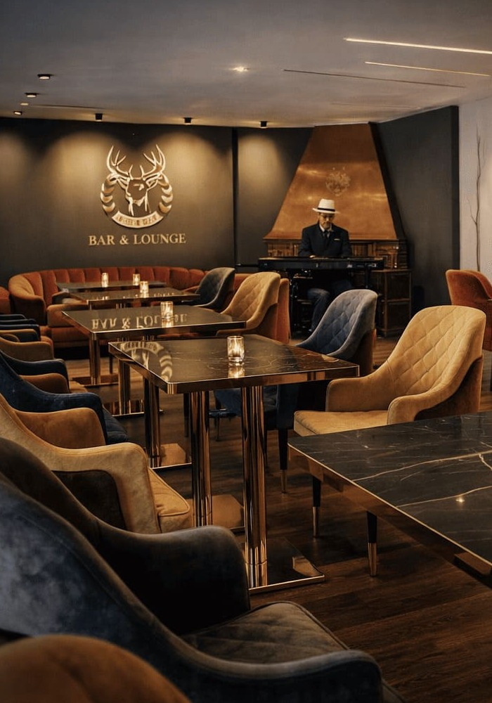
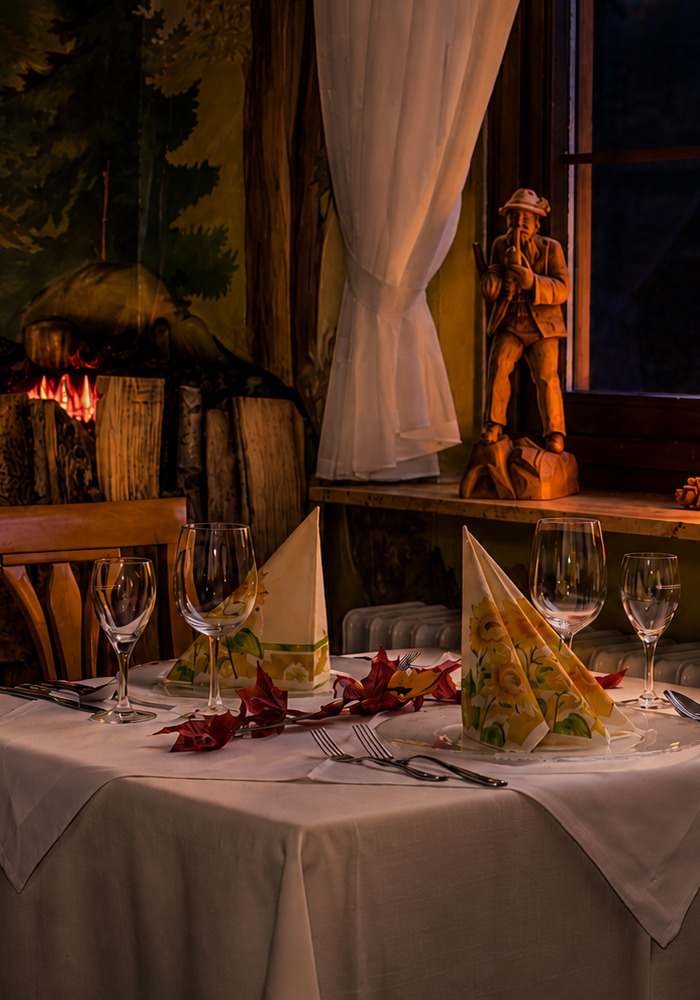

<section id="about" class="section-about">
  <div class="container container-about">
    <div class="about-block-left">
      
      
    </div>
    <div class="about-block-right">
      <h2 class="about-title">
        Italienische Küche, stilvolles Ambiente und aufmerksamer Service
      </h2>
      <h2 class="about-subtitle">Italienischer Genuss im Herzen des Schwarzwalds</h2>
      <p class="about-text">
        Erleben Sie authentische italienische Küche in stilvoller Atmosphäre und
        genießen Sie besondere Genussmomente direkt in unserem Hotelrestaurant.
        Unsere Küchenchefs bringen internationale Erfahrung aus verschiedenen
        Ländern Europas und der Welt mit und vereinen traditionelle italienische
        Rezepte mit moderner Raffinesse.
      </p>
      <p class="about-text">
        Frische Zutaten, hochwertige Qualität und mit Leidenschaft zubereitete
        Gerichte machen jeden Besuch zu einem kleinen Kurzurlaub für die Sinne.
        Ob romantisches Dinner, entspannter Abend am Kamin oder ein Glas Wein in
        gemütlicher Atmosphäre – bei uns erleben Sie ein Stück Italien mitten im
        Schwarzwald.
      </p>
    </div>
  </div>
</section>
